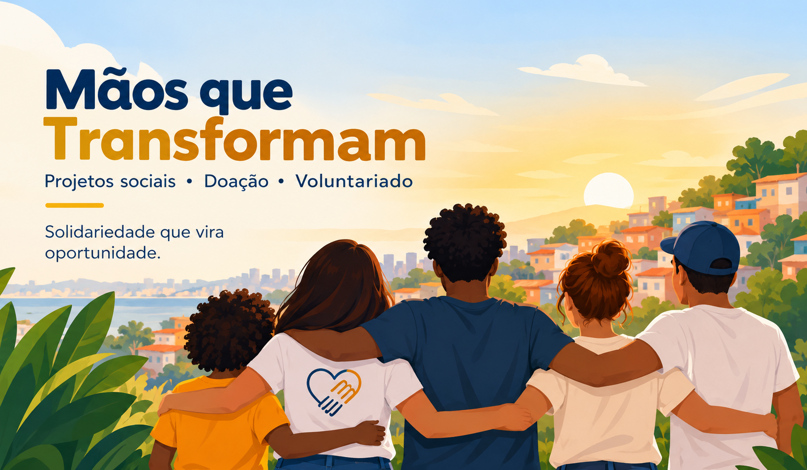

Conheça a nossa ONG

A Mãos que Transformam é uma organização do terceiro setor que desenvolve ações sociais para apoiar pessoas e fortalecer a comunidade.
Quero ser voluntárioQuem somos
Nosso objetivo é aproximar pessoas dispostas a ajudar de projetos que precisam de recursos, tempo e participação voluntária.
Entre em contato
E-mail: contato@maosquetransformam.org
Telefone: (71) 3333-0000
Endereço: Rua da Solidariedade, 100 - Salvador, BA